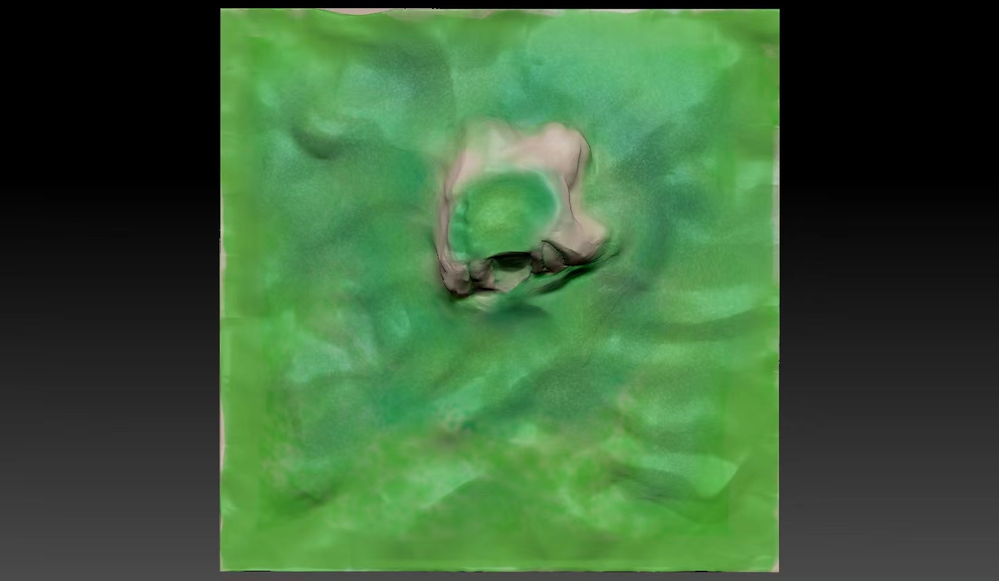

探索神奇的地质公园
Explore the amazing geopark
公园介绍
欢迎来到我们的地质公园！这里是一个融合自然美景和地质奇观的绝佳去处。
我们地质公园的特色在于其丰富多样的地质景观，以及深厚的地质历史。公园内有着多种地质现象和地貌特征，如壮丽的峡谷、雄伟的山峰、奇特的岩石构造等等。这些景观反映了地球演化的奇妙历程，让游客们领略自然之美与科学之奥秘。
我们地质公园的规划理念是保护、展示和教育。我们致力于保护这片独特的自然环境和丰富的地质资源，同时通过景点设置和解说服务，向游客展示地质演化的壮丽景象，并传达地球科学知识，促进公众对地质学的理解和认识。
公园内设有多个精心规划的景点，每个景点都具有独特的地质特征和教育意义。比如，我们有地层展示区，通过立体展示和解说服务，向游客展示不同地层的特征和地质历史；我们还有化石探索区，让游客可以近距离观赏和学习各种古生物化石；此外，还有地质演化步道、地质科普馆等等，为游客提供全方位的地质体验和知识学习。
3D打印技术应用：展示3D打印技术在地质公园中的应用案例和效果。
在我们的地质公园中，3D打印技术被广泛应用，为游客提供了全新的地质体验和学习方式。
我们利用3D打印技术制作了精密的地质构造模型，包括地层、断层、岩石构造等等。这些模型展示了地球演化的奇妙历程，使得游客可以直观地了解地球的地质结构和形成过程。
通过3D打印技术，我们复制了多种化石，包括古生物化石和植物化石等等。这些仿真的化石模型栩栩如生，让游客仿佛置身于古代的生物世界，感受地球演化的神奇历程。
我们利用3D打印技术模拟了多种地质景观，如峡谷、山峰、溪流等等。这些模型栩栩如生，使得游客可以在不同的地质景观中穿梭，领略自然之美和地质之奥秘。
我们还利用3D打印技术制作了多种互动体验装置，如地质演化模拟装置、化石挖掘装置等等。游客可以通过这些装置亲身参与地质探索和学习，增强他们的地质科学知识和兴趣。

科普教育价值：强调地质公园在科普教育中的作用和价值。
地质公园在科普教育中扮演着至关重要的角色，其作用和价值不可低估。
地质公园为游客提供了一个实地学习地质科学的绝佳机会。通过观察真实的地质现象和景观，听取专业解说员的讲解，游客可以增强对地质学知识的理解和掌握，提升科学素养。
地质公园以其独特的地质景观和奇特的地质现象吸引着大量游客前来参观。这些景观不仅展示了地球演化的奇妙历程，还能激发游客对地质学的兴趣和好奇心，促使他们进一步深入了解和探索地球科学。
地质公园通过各种展示和解说服务，向游客普及地质学知识，让他们了解地球的形成和演化过程，认识地质灾害的成因和防范措施，培养正确的环境保护意识，促进科学知识的普及和传播。
地质公园不仅是一个旅游景点，更是一个教育基地。学校和教育机构可以组织学生到地质公园进行实地考察和学习，丰富学生的课外活动，提升教育质量，培养学生的实践能力和科学精神。
综上所述，地质公园在科普教育中扮演着不可替代的角色，其作用和价值远远超出了旅游娱乐的范畴，对于提升公众科学素养、激发科学兴趣、普及科学知识、提升教育质量都具有重要意义。
游客指南：提供公园开放时间、门票价格、交通指南等信息。
欢迎来到我们的地质公园！以下是游客指南，希望能为您提供便利：
开放时间：
- 春季（3月-5月）：上午9:00 - 下午5:00
- 夏季（6月-8月）：上午8:30 - 下午6:00
- 秋季（9月-11月）：上午9:00 - 下午5:00
- 冬季（12月-2月）：上午9:30 - 下午4:30
门票价格：
- 成人：￥50
- 学生（持有效学生证）：￥30
- 儿童（1.2米以下）：免费
交通指南：
- 公交：可乘坐X路公交车到达地质公园站下车，步行约10分钟即可抵达。
- 自驾：从市区沿XX路前行，经过XX路口，沿XX路行驶至地质公园停车场。
- 出租车/网约车：直接告知司机前往地质公园，约XX分钟车程，费用约￥XX。
我们的地质公园将为您提供一次充满趣味和教育意义的旅行体验。祝您玩得愉快！